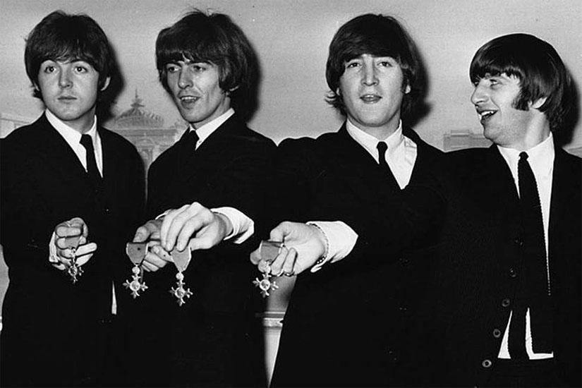

The Beatles were an English rock band formed in Liverpool in 1960. With a line-up comprising John Lennon, Paul McCartney, George Harrison and Ringo Starr, they are regarded as the most influential band of all time. With a sound rooted in skiffle, beat and 1950s rock and roll, the group were integral to the evolution of pop music into an art form, and to the development of the counterculture of the 1960s.
They often incorporated elements of classical music, older pop, and unconventional recording techniques in innovative ways, and they experimented with a number of musical styles in later years, ranging from pop ballads and Indian music to psychedelia and hard rock. As they continued to draw influences from a variety of cultural sources, their musical and lyrical sophistication grew, and they came to be seen as embodying the era's socio-cultural movements.
